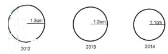

Answer all the questions in this section.
(b) Identify three methods of fishing that are used for deep sea fishing.(3 marks)
2. (a) Give three tourist attractions found in the lake region of Kenya.(3 marks)
(b) State three reasons why domestic tourism is encouraged in Kenya. (3 marks)
3. (a) Name three places in Kenya where geothermal energy has potential of being harnessed.(3 marks)
(b) State three physical factors that have favoured high Hydro-Electric Power production in Uganda.(3 marks)
(b) Identify three political problems facing regional trading blocs in Africa. (3 marks)
5. List three environmental hazards that are caused by human activities. (3 marks)
Answer question 6 and any other two questions from this section.
6. Study the data provided below and answer the questions that follow.
(ii) Calculate the percentage decline in export value between 2012 and 2013.
(2 marks)
(b) (i) What conclusion on value of exports can you make from the proportional
circles? (3 marks)
(ii) State four disadvantages of using proportional circles to represent the export values.(4 marks)
(c) The map below shows location of minerals in East Africa. Use it to answer question (e) (i).
(d) Explain three ways in which mining promotes industrialisation in Kenya. (6 marks)
(ii) Apart from tropical hardwood forests, name two other types of natural forest.(2 marks)
(iii) State the problems experienced in exploitation of tropical hardwood forests.(5 marks)
(d) Give five measures that the government has taken to conserve and manage forests in Kenya.(5 marks)
(b) Give three ways in which the government is trying to rehabilitate overgrazed lands in Kenya.(3 marks)
10. The pyramids below represent the population structure of Kenya and Sweden in the year 2009.
(a) Describe the characteristics of population of the two countries as represented by the
pyramids. (6 marks)
(ii) Explain three factors that have contributed to the reduction in fertility rate in Kenya. (3 marks)
(c) State three problems caused by slow population growth rate in developed countries. (3 marks)
(d) Explain four causes of rural-rural migration in Kenya. (8 marks)
1. (a) Name two categories of fish.(2 marks)
Pelagic Demersal Anadromous. Fresh water.
Salt water/ marine fish.
(b) Identify three methods of fishing that are used for deep sea fishing.(3 marks)
Trawling.
Long line.
Purse seining Drifting.
Whaling/harpooning.
2. (a) Give three tourist attractions found in the lake region of Kenya.(3 marks)
Wildlife in Ruma National Park/lmpala Sanctuary/birds sanctuary at Orango /kakamega forest.
Lake Victorial./L.simbi/ox-bow lakes.
Culture of the people
Kisumu Museum/historical/archaeological sites.
Hot sunny weather.
Sport fishing.
Beautiful scenery/escarpments/ granitic tors/crying stones/rift valleys/hot springs//waterfal1s/beaches.
(b) State three reasons why domestic tourism is encouraged in Kenya. (3 marks)
For people to appreciate the need to preserve wildlife/culture.
To utilize tourist facilities during low tourist season.
For the people to appreciate the tourist attraction features.
To earn revenue especially during the low tourist season.
To create employment opportunities/earn income to the people.
For education/ research.
To enhance national unity.
To provide market for local products.
3. (a) Name three places in Kenya where geothermal energy has potential of being harnessed.(3 marks)
Mt. Longonot/ Suswa/Homa hills.
Lake Bogoria/Baringo.
Eburru.
Menengai Crater/Mai-Mahiu.
Lake Turkana.
Lake Magadi.
(b) State three physical factors that have favoured high Hydro-Electric Power production in Uganda.(3 marks)
Large volume of water from River Nile/ other rivers/L. Victoria.
The Owen Falls provided a natural waterfall for power generation. High rainfall/1000mm throughout the year to enable high volume of water.
The regular supply of water from rivers/lakes.
Presence of hard basement/rocks to form firm foundation.
Presence of deep valleys/gorges.
Presence of non-porous rocks / impervious prevent leakage of water.
4. (a) Give two trading blocs in Africa. (2 marks)
Common Market for Eastern and Southern Africa (COMESA).
Southern African Development Community (SADC). Economic Community of West African States (ECOWAS).
East African Community (EAC).
(b) Identify three political problems facing regional trading blocs in Africa. (3 marks)
Civil wars/insecurity in some countries.
Political differences among leaders.
Negative publicity of goods among countries.
Inadequate institutional/ policy framework. Ideological differences among countries.
Many African countries are still aligned to their former colonial masters.
5. List three environmental hazards that are caused by human activities. (3 marks)
- Air pollution/Toxic gases/land pollution/noise/sound pollution. floods
Fires
Oil spills
Desertification/drought.
Soil erosion LandSlides.
Nuclear waste/radiation.
Pests.
SECTION B
Answer question 6 and any other two questions from this section.
6. Study the data provided below and answer the questions that follow.
Value of export earnings of selected crops from Kenya (Ksh millions)
| Crop |
2012 |
2013 |
2014 |
| Tea |
104141 |
104648 |
93996 |
| Coffee |
22271 |
16328 |
19913 |
| Sisal |
1184 |
1020 |
1325 |
| Total |
124896 |
121996 |
115234 |
(a) (i) Using a scale of 1 cm to 50,000 million, draw proportional circles to represent the total export earnings between 2012 and 2014. Use the diameter method.
(10 marks)
Round totals
| 2012 |
125,000 |
| 2013 |
122,000 |
| 2014 |
115,000 |
Scale: 1cm represents 50,000 million.
| Year |
Value in millions |
Diameter |
Radius |
| 2012 |
125,000 |
2.5 |
1.3 |
| 2013 |
122,000 |
2.4 |
1.2 |
| 2014 |
115,000 |
2.3 |
1.1 |
OR
2012 = 125,000,000,000 ÷ 50,000,000,000 = 2.5
2013 = 122,000,000,000 ÷ 50,000,000,000 = 2.4
2014 = 115,000,000,000 ÷ 50,000,000,000 = 2.3
The proportional circles showing the total export earnings for the period 2012 to
2014.
The total export earning for the period 2012 to 2014 . (Proportional circles)

(ii) Calculate the percentage decline in export value between 2012 and 2013.
(2 marks)
Difference 124896 —121996 = 2900
= 2900 x100/124896
2.3%
(b) (i) What conclusion on value of exports can you make from the proportional
circles? (3 marks)
The total export values for the selected crops was highest in 2012.
The total export value had a decline for the consecutive years. 2014 Tegistered the lowest export value.
Total exports value for the three years has very little significant difference.
(ii) State four disadvantages of using proportional circles to represent the export values.(4 marks)
It is tedious to construct.
It is time consuming.
It is difficult to accurately estimate/extract the actual total values from the circles.
It is difficult to compare many sets of data.
It is difficult to represent extreme values/very high / very low Values.
It is difficult to compare values which have a small range. It is difficult to determine the trend of the values.
(c) Explain how international trade in Kenya can be improved.(6 marks)
Kenya should improve her international transport/communication links for efficient transactions.
Kenya is exploring new markets in order to avoid over reliance on European
market/ traditional market.
Trade agreements signed by Kenya and various countries in Africa and America may increase volume of trade.
Kenya is processing some of the agricultural products before export /export processing zone in order to add value hence increase earnings.
The setting up of industries in the neighbouring countries by some Kenyan entrepreneurs is likely to increase volume of trade
to diversify the county’s exports in order to expand market/minimize competition.
Improving the state of security to guarantee state of traders and goods. Intensifying market campaigns internationally to create awareness of the locally produced goods.
Reduce cost of production so as to compete favourably in the international market.
7. (a) (i) Define the term mining.(2 marks)
Mining is the extraction of valuable minerals from the earth crust.
(ii) State four factors that influence the occurrence of minerals.(4 marks)
Vulcanicity leads to solidification of minerals in cracks and crevices.
Metamorphism lead to change into new mineral/formation of
minerals.
Leaching a weathering process results into concentration of minerals in the crust.
Erosion loosens minerals and transports them eventually depositing them as alluvial deposits.
Sedimentation deposits, accumulates and concentrates minerals in specific areas making them occur in layers, beds and seams.
Evaporation enhances crystallization leading to formation of salts.
Weathering exposes minerals near the earth’s surface.
(b) Describe the open cast method of mining.(5 marks)
- The mineral deposits lie within a few metres from the ground. The unwanted material on the top layer/overburden is removed.
- Soft mineral deposits are removed by drilling/scooping.
- Hard minerals are removed by blasting with explosives.
- The mineral is then scooped by excavator.
- The mineral is loaded into Lorries /conveyor belt to be transported for processing.
(c) The map below shows location of minerals in East Africa. Use it to answer question (e) (i).
(i) Name the minerals found in areas marked J, K, L and M(4 marks)
J — Tin
K — Salt/gypsium/limestone
L — Coal
M — Diamond
(ii) Describe the processing of Trona in lake Magadi.(4 marks)
The crystals are crushed and mixed with Trona and liquor.
A mixture of Trona and liquor is pumped through a pipeline to the soda ash factory.
Trona is separated from water by being put on large sieve like trays. The Trona is washed to remove mud and salt.
After drying Trona is heated/roasted in big cylinders and it breaks into small particles of sodium carbonate/soda ash.
Soda ash is allowed to cool.
It is then ground, weighed and packed into paper bags ready for transportation to the market.
(d) Explain three ways in which mining promotes industrialisation in Kenya. (6 marks)
Some minerals provide essential raw materials for some manufacturing industries.
Minerals are exported to earn the country foreign exchange which is used for development of industries.
Mining stimulates development of roads/railways which promotes industrial growth/eases movement of raw materials/finished products to industries.
Mining attracts settlements leading to development of towns which attract industrial development.
Mining creates employment raising the living standards of the people hence, creating a greater demand for industrial products thus promoting industrial
Mining has stimulated growth of related industries that supply inputs/services.
8. (a) (i) What is forestry?(2 marks)
Forestry is the science of developing and cultivating forests and utilizing them.
(ii) Apart from tropical hardwood forests, name two other types of natural forest.(2 marks)
Temperate hardwood.
Coniferous forests/temperate softwood.
Montane forest.
Mangrove forest.
Mixed forests
(iii) State the problems experienced in exploitation of tropical hardwood forests.(5 marks)
Trees take long time to mature
Forests are dense/ thick.
Trees do not mature at different times making harvesting difficult and expensive.
The forest have mixed tree species making exploitation difficult and almost impossible.
Tree trunks are huge, supported by buttress roots/presence of tree climbers/lianas hence difficult to exploit.
The trees are heavy /bulky making transportation difficult. Impassable roads/some parts of the forests are inaccessible.
(b) List the characteristics of planted forests in Kenya.(5 marks)
Trees appear in rows.
They have same species.
There are mainly softwoods.
They have little / no undergrowth.
They take short time to mature.
They appear in blocks.
They are mainly located in highland areas.
(c) Explain three factors that favour forestry in Canada.(6 marks)
The valley bottoms/ Coasts form good sites for location of paper mil1s/ clay from valley bottoms is used for smoothening the paper surface.
There are many rivers with waterfalls suitable for generation of hydro- electric power for use in the industries.
The low temperatures /cold climate in the highlands discourage settlement/agriculture leaving forestry as the only land use.
The landscape is rugged with thin soils that discourage agricultural/settlement activities therefore most of the mountain slopes are under forests.
Moderate to high precipitation throughout the year favours luxuriant growth of forests.
Presence of rivers which provide cheap water transport to transport logs to factories/presence of snow facilitates easy movement of logs.
Thete is ready market of forest products in Canada and USA.
Rivers provide water for processing timber.
The advanced technology which facilitates exploitation of forests. The advanced scientific research in forest management aids in forest conservation.
(d) Give five measures that the government has taken to conserve and manage forests in Kenya.(5 marks)
It has enacted /enforced law's to prohibit the cutting of trees without a licence
/protecting indigenous trees.
It has established forest research stations to conduct research on tree species. The NGOs/ Green Belt Movement/NEMA/KWS/KFS encourage protection of threatened forests.
It encourages people to use alternative sources of energy.
The tree planting programmes /campaigns are drawn during rainy seasons and implemented.
Forest are protected by establishing forests guards/development of the Nyayo Tea Zones.
It encourages people to use energy saving jikos.
It has declared endangered forest as forest reserves gazetting forests
Farmers are encouraged to practice agro forestry.
Farmers are encouraged to practice agroforestry.
Encouraging recycling of wood products. Creating awareness on the importance of trees.
Establishment of training institutions in forestry.
9. (a) Explain each of the following methods of land rehabilitation:
(i) Mulching(4 marks)
This is the use of crop residues such as vegetable remains, plant litter, and grass and polythene sheets to cover the soil/crop.
It helps to retain soil moisture, reduce soil erosion and reduce the splashing effect of rain water on soil.
It increases water infiltration in to the soil by preventing it from surface runoff.
When the vegetative materials decompose it produces organic matter which increases the fertility of the soil.
(ii) Bunds and gabions(6 marks)
Bunds are soil piles across a slope constructed to control soil erosion.
Bunds are also built to check surface runoff which would cause soil erosion/influence water infiltration.
Gabions are wire mesh that are filled with soil, stones and other materials.
Gabions are constructed on slopes/across gullies to trap soils being carried by running water down slope.
Gabions encourage vegetation growth in the trapped soil.
Both are effective for controlling soil erosion/stabilizing slopes
(b) Give three ways in which the government is trying to rehabilitate overgrazed lands in Kenya.(3 marks)
Livestock extension officers move around advising farmers on the importance of keeping livestock according to the carrying capacity of the land.
Introducing exotic breeds /cross breeds to emphasize quality and not quantity.
It has established / encouraged establishment of ranches in the livestock keeping regions to improve quality of animals.
It has encouraged farmers to grow fodder /introduced nourishing grass which is drought resistant.
(c) (i) Name four types of irrigation practised in Kenya.(4 marks)
Livestock extension officers move around advising farmers on the importance of keeping livestock according to the carrying capacity of the land.
Introducing exotic breeds /cross breeds to emphasize quality and not quantity.
It has established / encouraged establishment of ranches in the livestock keeping regions to improve quality of animals.
It has encouraged farmers to grow fodder /introduced nourishing grass which is drought resistant.
(ii) Explain two conditions that favour irrigation farming in Kenya.(4 marks)
Gently sloping land which permits flow of water by gravity hence reducing pumping of water to the fields
Presence of clay soils/black cotton soils which retain water for longer use by crops.
Presence of rivers /reservoirs/lakes which provide regular water supply making it possible to irrigate land throughout the year. High temperatures throughout the year which allows multiple cropping/continuous farming activities throughout the year.
Availability of market which stimulates production.
Efficient transport systems easing movement of goods and inputs.
Low rainfall making irrigation necessary.
Government policy to develop irrigation projects enhances production.
(d) Give the characteristics of land reclamation in Kenya.(4 marks)
Simple methods of reclaiming land are used like digging canals/ditches to drain water.
Land is reclaimed mainly from swamps/marginal lands.
Irrigation is used where there is low rainfa11/in arid areas.
Drought resistant crops are planted.
There is high evaporation of irrigation water due to high temperatures.
Trees are planted
10. The pyramids below represent the population structure of Kenya and Sweden in the year 2009.
Use them to answer question
POPULATION PYRAMIDS 2009
(a) Describe the characteristics of population of the two countries as represented by the
pyramids. (6 marks)
In both Kenya and Sweden the number of male and female is almost equal at all ages.
In Kenya the aging population is low/there is low life expectancy. In Sweden the aging population is high/the life expectancy is high.
In Kenya the dependency ratio is high. In Sweden the dependency ratio is low.
In Kenya, the number of infants from age 0 to 4 years is high. In Sweden the numbers of infants from age 0-4 years is low.
In Kenya the working population is low. In Sweden the working population is moderate/high.
In Kenya, the number of youthful population is high .In Sweden the number of youthful population is low.
In Kenya birth rate is high. In Sweden the birth rate is low.
In Kenya the death rate ls high. In Sweden the birth rate is low.
The fertility rate is high in Kenya .In Sweden the fertility rate ls low.
(b) (i) What is fertility rate? (2 marks)
Fertility rate is the number of live births in a given population in a year
/the number of live births per thousand women of child bearing age in a given year.
(ii) Explain three factors that have contributed to the reduction in fertility rate in Kenya. (3 marks)
The cost of bringing up children has gone up therefore parents limit the number of children they can have.
Increased use of birth control methods has lowered the number of children women get in their life time.
More girls are attending school/ are pursuing higher education and training. This makes them stay longer before getting married.
Modem career opportunities have a limiting influence on a woman’s fertility rate. Some employers do not want to employ women who keep going on maternity leave.
There is an increase in the number of women opting to remain single, thus reducing the number of children.
Urbanization has influenced people to have small families.
(c) State three problems caused by slow population growth rate in developed countries. (3 marks)
The social amenities are underutilized/high cost of maintaining social amenities.
There is inadequate labour supply/manpower.
The dependency ratio is high in old age.
There is reduction in revenue collection.
There is underutilizatlon/under exploitation n of resources.
There is inadequate local market for the locally produced goods/ decline of industries.
The high cost of transport/services.
Limited investment.
(d) Explain four causes of rural-rural migration in Kenya. (8 marks)
Explain four causes of rural — rural migration in Kenya.
People move one rural area to another in search of employment.
Insecurity in some rural areas make people move to safer places.
Pressure on land makes people buy /look for land elsewhere and settle.
Setting up of government development projects may cause displacement of people who are settled elsewhere /government projects may attract settlement in those areas.
Pastoral communities migrate from one rural area to another in search of pasture/water for their livestock.
Changes in land tenure system/inheritance/land disputes cause people to move and settle elsewhere.
Natural calamities make people to move to safer places.
Transfer of services from one rural area to another/retirement/retrenchment.